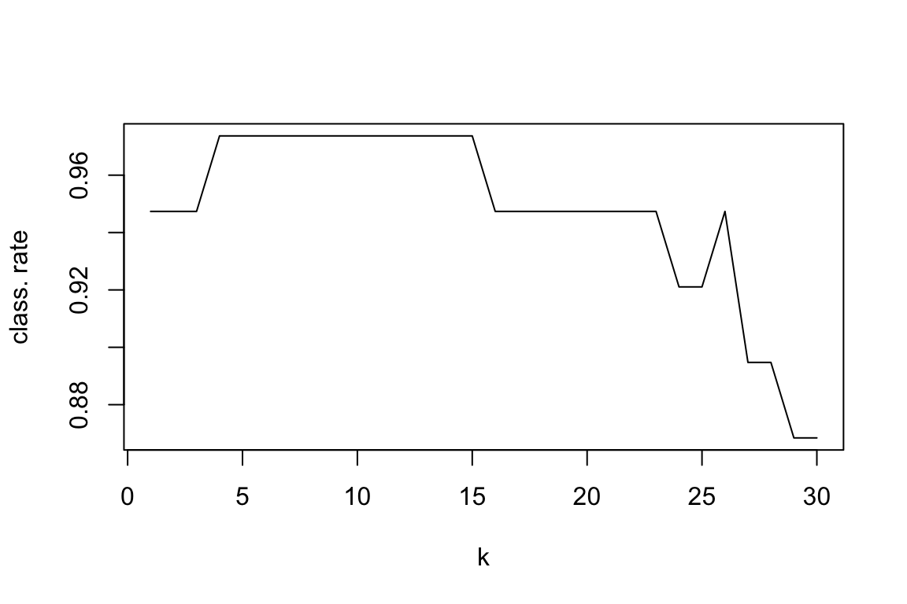

Chapter 12 Classification with knn and decision trees
Aims
- to introduce classification with knn and decision trees
Learning outcomes
- to understand the concepts of splitting data into training, validation and test set
- to be able to calculate overall and class specific classification rates
- to use knn() function to select run the optimal value of k and build knn classifier
- to use rpart() function to fit and optimize a decision tree
- to use knn and a decision tree for prediction
12.1 Classification
- Classification methods are prediction models and algorithms use to classify or categorize objects based on their measurements
- They belong under supervised learning as we usually start off with labeled data, i.e. observations with measurements for which we know the label (class) of
- If we have a pair \(\{\mathbf{x_i}, g_i\}\) for each observation \(i\), with \(g_i \in \{1, \dots, G\}\) being the class label, where \(G\) is the number of different classes and \(\mathbf{x_i}\) a set of exploratory variables, that can be continuous, categorical or a mix of both, then we want to find a classification rule \(f(.)\) (model) such that \[f(\mathbf{x_i})=g_i\]
12.2 Evaluating Classification Model Performance
- Once we have a classification model we need some way of evaluating how well it works and how it compares to other models
- There are few measures being used that involve looking at the truth (labels) and comparing it to what was predicted by the model
- Common measures include: correct (overall) classification rate, Missclassification rate, class specific rates, cross classification tables, sensitivity and specificity and ROC curves
Correct (miss)classification rate
- the simplest way to evaluate in which we count for all the \(n\) predictions how many times we got the classification right \[Correct\; Classifcation \; Rate = \frac{\sum_{i=1}^{n}1[f(x_i)=g_i]}{n}\] where \(1[]\) is an indicator function equal to 1 if the statement in the bracket is true and 0 otherwise
- Missclassification Rate = 1 - Correct Classification Rate
Class specific rates and cross classification table \[CCR \; for \; class\; j = \frac{number \; of \; observations \; in \; class \; j \; that \; were \; correctly \; classified}{number \; of \; observations \; in \; class \; j} = \\ \sum_{i:g_i=j}{\frac{1[f(\mathbf{x_i})\neq j]}{n_j} = \frac{n_j-k_j}{n_j}}\]
Example
# Example data
true.clas <- c(1, 1, 1, 1, 1, 1, 2, 2, 2, 2)
pred.class <- c(1, 1, 2, 1, 1, 2, 1, 1, 2, 2)
# correct classification rate
n <- length(true.clas)
ccr <- sum(true.clas == pred.class)/n
print(ccr)
## [1] 0.6
# cross classification table
tab.pred <- table(true.clas, pred.class)
print(tab.pred)
## pred.class
## true.clas 1 2
## 1 4 2
## 2 2 2
# cross classification rate
# we divide each row by its sum (using sweep function)
tab.rate <- sweep(tab.pred, 1, apply(tab.pred, 1, sum), "/")
tab.rate <- round(tab.rate, 2)
print(tab.rate)
## pred.class
## true.clas 1 2
## 1 0.67 0.33
## 2 0.50 0.5012.3 Data splitting
- part of the issue of fitting complex models to data is that the model can be continually tweaked to adapt as well as possible
- but the results may not be generalizable to future data due to the added complexity modeling noise that is unique to a particular dataset (overfitting)
- to deal with overconfident estimation of future performance we randomly split data into training data, validation data and test data
- common split strategy are 50%/25%/25% and 33%/33%/33% for training/validation/test
- training data: this is data to give fit (train) the classification model, i.e. derive the classification rule
- validation data: this is data used to select which parameters or types of model perform best, i.e. to validate the performance of model parameters
- test data: this data is used to give an estimate of future prediction performance for the model and parameters chosen
12.4 Cross validation
- the could happen that despite random splitting in train/validation/test dataset one of the subsets does not represent data (i.e. gets all the difficult observation to classify)
- or that we do not have enough data in each subset after performing the split
- In K-fold cross-validation we split data into \(K\) roughly equal-sized parts
- We start by setting the validation data to be the first set of data and the training data to be all other sets
- We estimate the validation error rate / correct classification rate for the split
- We then repeat the process \(K-1\) times, each time with a different part of the data set to be the validation data and the remainder being the training data
- We finish with \(K\) different error of correct classification rates
- In this way, every data point has its class membership predicted once
- The final reporter error rate is usually the average of \(K\) error rates
Now we know how to assess our classification models. Let’s try it out on two methods, k-nearest neighbors and decision tree
12.5 k-nearest neighbours
- k-nearest neighbours (knn) is a non-parametric classification method, i.e. we do not have to assume a parametric model for the data of the classes
- there is no need to worry about the diagnostic tests for
Algorithm
- Decide on the value of \(k\)
- Calculate the distance between the query-instance (new observation) and all the training samples
- Sort the distances and determine the nearest neighbours based on the k-th minimum distance
- Gather the categories of the nearest neighbours
- Use simple majority of the categories of nearest neighbours as the prediction value of the new observation
Euclidean distance is a classic distance used with knn; other distance measures are also used incl. weighted Euclidean distance, Mahalanobis distance, Manhatan distance, maximum distance etc.
Figure 3.3: An example of k-nearest neighbours algorithm with k=3; in the top new observation (blue) is closest to three red triangales and thus classified as a red triangle; in the bottom, a new observation (blue) is closest to 2 black dots and 1 red triangle thus classified as a black dot (majority vote)
choosing k
- for problems with 2 classes, choose an odd number of k to avoid ties
- use validation data to fit the model for a series of \(k\) values
- pick the value of \(k\) which results in the best model (as assessed by the method of choice, e.g. overall classification rate)
Let’s see how it works in practice on a classical iris dataset containing measurements on petals and sepals as well as species information (setosa, versicolor, virginica)
# library with knn() function
library(class)
# preview iris dataset
head(iris)
## Sepal.Length Sepal.Width Petal.Length Petal.Width Species
## 1 5.1 3.5 1.4 0.2 setosa
## 2 4.9 3.0 1.4 0.2 setosa
## 3 4.7 3.2 1.3 0.2 setosa
## 4 4.6 3.1 1.5 0.2 setosa
## 5 5.0 3.6 1.4 0.2 setosa
## 6 5.4 3.9 1.7 0.4 setosa
# summary statistics
summary(iris)
## Sepal.Length Sepal.Width Petal.Length Petal.Width
## Min. :4.300 Min. :2.000 Min. :1.000 Min. :0.100
## 1st Qu.:5.100 1st Qu.:2.800 1st Qu.:1.600 1st Qu.:0.300
## Median :5.800 Median :3.000 Median :4.350 Median :1.300
## Mean :5.843 Mean :3.057 Mean :3.758 Mean :1.199
## 3rd Qu.:6.400 3rd Qu.:3.300 3rd Qu.:5.100 3rd Qu.:1.800
## Max. :7.900 Max. :4.400 Max. :6.900 Max. :2.500
## Species
## setosa :50
## versicolor:50
## virginica :50
##
##
##
# split data into train 50%, validation 25% and test dataset 25%
set.seed(5)
n <- nrow(iris) # no. of observations
idx.train <- sample(c(1:n), round(n/2))
idx.valid <- sample(c(1:n)[-idx.train], round(n/4))
idx.test <- setdiff(c(1:n), c(idx.train, idx.valid))
data.train <- iris[idx.train,]
data.valid <- iris[idx.valid,]
data.test <- iris[idx.test,]
dim(data.train)
## [1] 75 5
dim(data.valid)
## [1] 38 5
dim(data.test)
## [1] 37 5
# run knn with different values of k from 1 : 30
k.values <- 1:30
class.rate <- rep(0, length(k.values)) # allocate empty vector to collect correct classification rates
for (k in seq_along(k.values))
{
pred.class <- knn(train = data.train[, -5], test=data.valid[, -5], cl = data.train[,5], k)
class.rate[k] <- sum((pred.class==data.valid[,5]))/length(pred.class)
}
# for which value of k we reach the highest classification rate
which.max(class.rate)
## [1] 4
# plot classification rate as a function of k
plot(class.rate, type="l", xlab="k", ylab="class. rate")
# how would our model perform on the future data using the optimal k?
pred.class <- knn(train = data.train[, -5], data.test[, -5], data.train[,5], k=which.max(class.rate))
class.rate <- sum((pred.class==data.test[,5]))/length(pred.class)
print(class.rate)## [1] 112.6 Classification trees
- they are often used to represent knowledge and aid decision-making
- they can be easily interpretable by anyone
- similar to knn they are assumption free and can handle various data input
- they can be presented as diagrams or pseudo-code via text
- they can be used for both classification and regression
- here we will focus on classification
Terminology
- Root node: represents the entire population of the data set
- Splitting: the process of dividing a node into two or more nodes
- Decision / internal node: when a new node is split into further nodes
- Leaf / terminal noel: nodes that do not split into further nodes
- Subtree: a subsection of a tree
- Branch: a subtree that is only one side of a split from a node
To make predictions we simply travel down the tree starting from the top
Figure 11.1: Example of the decision tree classifying tumour into bening and malignant type
Fitting trees 1. pick the variable that gives the best split (often based on the lowest Gini index) 2. partition the data based on the value of this variable 3. repeat step 1. and step 2. 4. stop splitting when no further gain can be made or some pre-set stopping rule is met Alternatively, the data is split as much as possible and the tree is pruned
Gini index
- measures impurity in node, an alternative way of assessing model’s performance to classification rates that have been shown to result in local overfitting in decision trees
- Gini index varies between 0 and (1-1/n) where \(n\) is the number of categories in a dependent variable \[Gini = \displaystyle \sum_{i=1}^{c}(p_i)^2\] where \(c\) is the number of categories
## [1] 699 11
## [1] "benign" "malignant"
## Id Cl.thickness Cell.size Cell.shape Marg.adhesion Epith.c.size
## 1 1000025 5 1 1 1 2
## 2 1002945 5 4 4 5 7
## 3 1015425 3 1 1 1 2
## 4 1016277 6 8 8 1 3
## 5 1017023 4 1 1 3 2
## 6 1017122 8 10 10 8 7
## Bare.nuclei Bl.cromatin Normal.nucleoli Mitoses Class
## 1 1 3 1 1 benign
## 2 10 3 2 1 benign
## 3 2 3 1 1 benign
## 4 4 3 7 1 benign
## 5 1 3 1 1 benign
## 6 10 9 7 1 malignant
##
## Classification tree:
## rpart(formula = Class ~ Cl.thickness + Cell.size + Cell.shape +
## Marg.adhesion + Epith.c.size + Bare.nuclei + Bl.cromatin +
## Normal.nucleoli + Mitoses, data = BreastCancer)
##
## Variables actually used in tree construction:
## [1] Bare.nuclei Cell.shape Cell.size Normal.nucleoli
##
## Root node error: 241/699 = 0.34478
##
## n= 699
##
## CP nsplit rel error xerror xstd
## 1 0.780083 0 1.00000 1.00000 0.052142
## 2 0.053942 1 0.21992 0.26141 0.031415
## 3 0.024896 2 0.16598 0.18257 0.026644
## 4 0.012448 3 0.14108 0.16598 0.025481
## 5 0.010000 6 0.10373 0.16183 0.025180
Figure 12.1: Example of the decision tree classifying tumour into bening and malignant type with rpart() default parameteres
Importance of the variable
- defined as the sum of goodness of split measures for each split for which it as the primary variable
# show variable.importance attribute
tree.1$variable.importance
## Cell.size Cell.shape Normal.nucleoli Epith.c.size Bl.cromatin
## 228.196290 195.580593 167.558093 164.615713 160.203228
## Bare.nuclei Mitoses Cl.thickness Marg.adhesion
## 154.590550 5.763756 4.301576 2.655170Complexity measure of a tree
- in rpart() the complexity measure is calculated based on the size of a tree and the ability of the tree to separate the classes of the target variable
- if the next best split in growing a tree does not reduce the tree’s overall complexity by a certain amount, rpart() terminates the growing process
cpis the complexity parameter, set to negative amount results in a fully grown tree (maximum splits)
##
## Classification tree:
## rpart(formula = Class ~ Cl.thickness + Cell.size + Cell.shape +
## Marg.adhesion + Epith.c.size + Bare.nuclei + Bl.cromatin +
## Normal.nucleoli + Mitoses, data = BreastCancer, cp = -1)
##
## Variables actually used in tree construction:
## [1] Bare.nuclei Bl.cromatin Cell.shape Cell.size
## [5] Cl.thickness Normal.nucleoli
##
## Root node error: 241/699 = 0.34478
##
## n= 699
##
## CP nsplit rel error xerror xstd
## 1 0.780083 0 1.00000 1.00000 0.052142
## 2 0.053942 1 0.21992 0.24481 0.030497
## 3 0.024896 2 0.16598 0.17842 0.026359
## 4 0.012448 3 0.14108 0.16183 0.025180
## 5 0.000000 6 0.10373 0.17012 0.025778
## 6 -1.000000 15 0.10373 0.17012 0.025778Figure 12.2: Example of the decision tree classifying tumour into bening and malignant type with rpart(), fully grown tree
Pruning a tree
- fully grown trees do not usually perform well against data not in the training set (overfitting)
- a solution to this is to reduce (prune) the tree
- typically, this is done by choosing the complexity parameter associated with the minimum possible cross-validated error
xerror, in the tree view output, in our \(cp = 0.14108\) in the above case
##
## Classification tree:
## rpart(formula = Class ~ Cl.thickness + Cell.size + Cell.shape +
## Marg.adhesion + Epith.c.size + Bare.nuclei + Bl.cromatin +
## Normal.nucleoli + Mitoses, data = BreastCancer, cp = -1)
##
## Variables actually used in tree construction:
## [1] Cell.size
##
## Root node error: 241/699 = 0.34478
##
## n= 699
##
## CP nsplit rel error xerror xstd
## 1 0.78008 0 1.00000 1.00000 0.052142
## 2 0.14108 1 0.21992 0.24481 0.030497
## Cell.size Cell.shape Epith.c.size Normal.nucleoli Bl.cromatin
## 222.9401 174.2235 163.4894 153.5809 151.9295
## Bare.nuclei
## 142.0211Figure 12.3: Example of the decision tree classifying tumour into bening and malignant type with rpart() pruned tree to minimize cross-validation error
Predictions of future observations
- having our best tree model we can predict the outcome of applications on a test data set and assess model performance on “unseen” data
# predict cancer type given tree model
cancertype <- predict(tree.2pruned, newdata = data.test, type="class")
# cross classification table
table(cancertype, data.test$Class)
##
## cancertype benign malignant
## benign 208 6
## malignant 22 11312.7 Exercises: classification
Exercise 12.1 knn and rpart practice
Make sure you can run and understand the above knn and rpart examplesExercise 12.2 Comparing knn() and rpart()
Given BreastCancer data
- build a best knn() classification model that you can to predict the cancer in BreatCancer data set
- try improving the rpart() model, look at the documentation ?rpart.control() and try to figure out and test changing other parameters, especially
minsplitandminbucket - compare the performance of your best knn() models with your best rpart() model on the test data
- share which method knn or rpart performs better together with the overall classification rate on Zulip (under Day-04)
# Install "mlbench" package
install.packages("mlbench")
## Installing package into '/Users/olga.hrydziuszko/Desktop/bookdown-mlbiostatistics/packrat/lib/x86_64-apple-darwin17.0/4.0.2'
## (as 'lib' is unspecified)
##
## The downloaded binary packages are in
## /var/folders/hw/jx67_4vj6ljfd13xsg7xzvt83k7mrx/T//RtmpJYgppq/downloaded_packages
library(mlbench)
# Look at the Breast Cancer data
# more about data is here: https://archive.ics.uci.edu/ml/datasets/Breast+Cancer+Wisconsin+(Original)
data(BreastCancer)
dim(BreastCancer)
## [1] 699 11
levels(BreastCancer$Class)
## [1] "benign" "malignant"
head(BreastCancer)
## Id Cl.thickness Cell.size Cell.shape Marg.adhesion Epith.c.size
## 1 1000025 5 1 1 1 2
## 2 1002945 5 4 4 5 7
## 3 1015425 3 1 1 1 2
## 4 1016277 6 8 8 1 3
## 5 1017023 4 1 1 3 2
## 6 1017122 8 10 10 8 7
## Bare.nuclei Bl.cromatin Normal.nucleoli Mitoses Class
## 1 1 3 1 1 benign
## 2 10 3 2 1 benign
## 3 2 3 1 1 benign
## 4 4 3 7 1 benign
## 5 1 3 1 1 benign
## 6 10 9 7 1 malignant